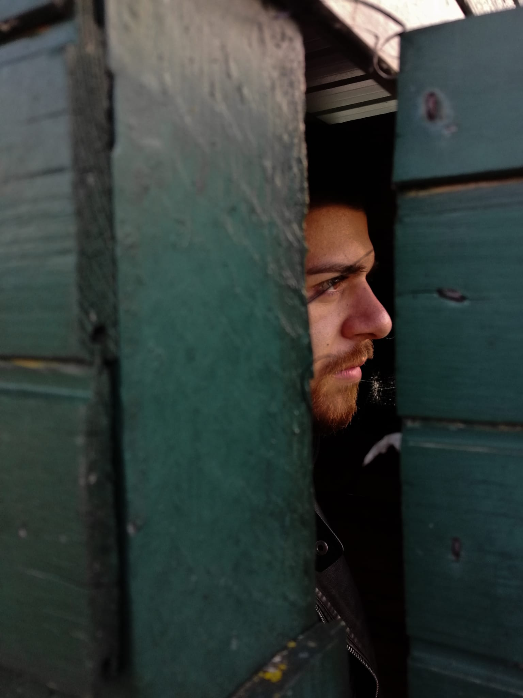

 Nel Luglio 2018 mi sono diplomato come Perito Meccanico, presso IIS Campus Leonardo da Vinci di Umbertide, che si trova nella provincia di Perugia. Dopo alcuni mesi dal diploma finalmente avevo trovato lavoro presso l'azienda metalmeccanica Terex, che è una multinazionale americana, la quale si occupa della creazione di piattaforme aeree. Il mio ruolo all'interno di essa era quello di assemblare alcuni componenti dei macchinari. Nel Marzo 2019 purtroppo furono costretti a licenziarmi, per lo sfortunato fallimento di un'azienda che gli forniva del lavoro. Non mi sono demoralizzato e mi sono immediatamente rimboccato le maniche per trovarmi un nuovo lavoro, fino a quando nell'Ottobre 2019 sono stato assunto da un'altra azienda metalmeccanica, che si chiama Modulo S.r.l.. La differenza dalla prima azienda in cui ho lavorato, era che non assemblavo più dei componenti, ma creavo tramite una macchina CNC i componenti stessi, che successivamente andavo assemblati alle auto. Per me è stata una bellissima esperienza, perché i colleghi con cui ho lavorato sono stati sempre gentili con me e mi hanno fatto crescere e maturare. Purtroppo nel Marzo 2020, a causa del Covid-19 l'azienda è stata costretta ad interrompere il mio contratto e lasciarmi a casa. Inizialmente per me è stato come trovarmi in un tunnel senza uscita, le domande erano tante e la situazione non era della migliore. L'unica cosa che potevo fare era rimboccarmi le maniche, senza demoralizzarmi come la prima volta e mettermi giù a trovare anche un piccolo lavoro per andare avanti, fino a Novembre 2020 ho fatto alcuni lavori sia agricoli che metalmeccanici. Nel mese di Novembre sono stato costretto a rifermarmi di nuovo, per il fatto che io e i miei genitori eravamo positivi al Covid-19, e questo lo ritengo il periodo in parte più importante per me, perché se non avessi avuto il covid, non avrei mai fatto alcune scelte, come ad esempio unirmi alla Comunity di Start2Impact. Nel perido che ero costretto a stare in casa avevo capito che alcuni lavori che ho svolto, non erano realmente quello che volevo, la vita che volevo non era quella. Mi sono messo subito all'opera, e ho iniziato a cercare dei corsi, ma non volevo dei semplici corsi, me ne occorreva uno che mi formasse, ma allo stesso tempo mi permettesse di stare in contatto e confrontarmi con i membri che ne facevano parte. Volevo un corso che mi formasse per fare un lavoro che anche con una pandemia si potesse lavorare da remoto, per questo mi è saltato subito all'occhio la Comunity di Start2Impact, dove ho trovato persone con cui confrontarmi, che sono veramente disponibili e cordiali.